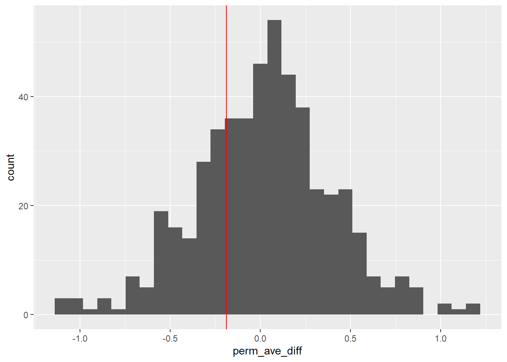

#| echo: false
library(tidyverse)
library(ggplot2)
library(readxl)
library(dplyr)
TesLaS_DataSet <- read_excel("TesLaS_DataSet.xlsx") #read the excel file Content and Language Integrated-Learning and Cognition
Content and Language Integrated-Learning and Cognition
A few permutation tests and a discussion on CLIL in psycholinguistics, as well as Language-Switching Costs and the Adaptive Control Model.
CLIL
- Content and Language Integrated-Learning
- students are taught non-language study subjects in a language that they are still learning
- intended increase efficiency: students will, in theory, learn the subject material while also improving in their target language
- the cognitive burden of language-switching costs (LSC) may outweigh the possible benefits of CLIL
Language Switching Costs
- encoding-specificity hypothesis
- language dependent knowledge representation framework
- both claim that information that is learned in one language is ‘encoded’ in that language and the representation of knowledge is language-dependent
- essentially, that information learned in one language context is difficult to retrieve in other language contexts
- just one problem…
Dual Activation Model
- very well-studied and documented phenomenon
- the model of bilingual cognition the field currently operates under
- all languages that a bilingual person uses are activated simultaneously
- how to get around this conflict?
Adaptive Control Hypothesis
- proposed in Green & Abutalebi, 2013, expanded upon by Bialystok & Craik (2022)
- identifies three types of bilingual language use contexts
- each context has different demand

Adaptive Control Hypothesis
- single language: each language used in a distinct context
- dual language: both languages are used in the same context but with different speakers
- dense code-switching: where both languages are used in the same context with other bilingual speakers
CLIL
So why is CLIL hard? - CLIL students are often in single or dual language contexts - constant demand on Goal Maintenance and Interference Control processes - do these processes impact knowledge encoding and retrieval?
Downsides of CLIL
- CLIL is new-ish and popular for language competency
- people love to talk about the benefits (Dalton-Puffer, 2008)
- but CLIL students struggle compared to their peers in monolingual education
- shown to perform worse overall or need more time to display the same level of knowledge (e.g., Lo and Lo, 2014, Dallinger et al., 2016, Piesche et al., 2016)
LSC and CLIL
- knowledge is harder to retrieve from a different language than it was aquired in
- language-switching is directly detrimental to retrieval-based learning (Wußing et al., 2023)
- retrieval-based learning (practise tests) known to be more effective than restudy-based learning
- bad news for CLIL students if LSC impact the testing effect
Wußing et al., 2023
Taught 117 German-English bilinguals 20 math concepts

Some Hypotheses
Null Hypothesis: Language switching has no effect on learning performance
Null Hypothesis: Language switching has no effect on restudy learning performance
Null Hypothesis: Language switching has no effect on retrieval learning performance
Null Hypothesis: The timing of a language switch has no impact on learning performance
The Data
The column names were originally all in German, I used my best judgement when translating, but know that I am not a native German speaker
#renamed all of the German variable names. I couldn't get the Proband:innen one to rename, I think because of the colon, but that's participant ID
TesLaS_DataSet <- TesLaS_DataSet |>
rename(
trial_number = Nummer,
condition = Bedingung,
variant = Variante,
cued_correct_images = Summe_Korrekt_Abbildungen,
cued_correct_statements = Summe_Korrekt_Aussagen,
cued_correct_total = Summe_Gesamt,
cued_correct_testing = Summe_Korrekt_Testing,
cued_correct_restudy = Summe_Korrekt_Restudy,
testing_advantage_cued_recall = Testing_Vorteil_CuedRecall,
transfer_correct_images = Tra_Summe_Korrekt_Abbildungen,
transfer_correct_statements = Tra_Summe_Korrekt_Aussagen,
transfer_correct_total = Tra_Summe_Gesamt,
transfer_correct_testing = Korrekt_Testing_Transfer,
transfer_correct_restudy = Korrekt_Restudy_Transfer,
testing_advantage_transfer = Testing_Vorteil_Transfer
) |>
mutate( #renamed the conditions so it's easier to follow later
condition = case_when(
condition == 1 ~ "monolingual",
condition == 2 ~ "switching for final tests",
condition == 3 ~ "switching for subsequent learning" ))
head(TesLaS_DataSet) #show 6 rows# A tibble: 6 × 16
`Proband:innen` trial_number condition variant cued_correct_images
<chr> <dbl> <chr> <dbl> <dbl>
1 1onki16 1 monolingual 1 8
2 4ietz13 2 monolingual 4 2
3 3NAER21 3 monolingual 3 1
4 2nees17 4 monolingual 2 1
5 1alki14 5 monolingual 1 4
6 4aner12 6 monolingual 4 7
# ℹ 11 more variables: cued_correct_statements <dbl>, cued_correct_total <dbl>,
# cued_correct_testing <dbl>, cued_correct_restudy <dbl>,
# testing_advantage_cued_recall <dbl>, transfer_correct_images <dbl>,
# transfer_correct_statements <dbl>, transfer_correct_total <dbl>,
# transfer_correct_testing <dbl>, transfer_correct_restudy <dbl>,
# testing_advantage_transfer <dbl>Conditions
TesLaS_means <- TesLaS_DataSet |>
group_by(condition) |>
summarise( #collapses it all into the grouped conditions
mean_cued_correct_testing = mean(cued_correct_testing, na.rm = TRUE),
mean_cued_correct_restudy = mean(cued_correct_restudy, na.rm = TRUE),
mean_transfer_correct_testing = mean(transfer_correct_testing, na.rm = TRUE),
mean_transfer_correct_restudy = mean(transfer_correct_restudy, na.rm = TRUE),
n = n() #number of participants per condition
)
TesLaS_means #return the tibble, should be 3x6 # A tibble: 3 × 6
condition mean_cued_correct_te…¹ mean_cued_correct_re…² mean_transfer_correc…³
<chr> <dbl> <dbl> <dbl>
1 monoling… 4.53 2.5 7.08
2 switchin… 3.34 2.32 6.92
3 switchin… 2.28 1.87 5.82
# ℹ abbreviated names: ¹mean_cued_correct_testing, ²mean_cued_correct_restudy,
# ³mean_transfer_correct_testing
# ℹ 2 more variables: mean_transfer_correct_restudy <dbl>, n <int>Null Hypothesis 1: Language switching has no effect on learning performance
- compared the monolingual condition to the condition which switched for subsequent learning
- grouped together the cued final test and transfer final test, I’m not trying to look at what kind of final test participants perform better on
- grouped together the retrieval learning participants and the restudy learning participants, just looking at overall learning performace
set.seed(47)
perm1_data <- function(rep, data) {
data |>
#picked conditions 1 and 3 to compare, I don't think I can do all 3 at once
filter(condition == "monolingual" | condition == "switching for subsequent learning") |>
select(condition, cued_correct_testing, transfer_correct_testing, cued_correct_restudy, cued_correct_testing) |>
#I don't actually care about the results by the different types of final tests, so I'm combining them
mutate(combined_testing = (cued_correct_testing + transfer_correct_testing + cued_correct_restudy + cued_correct_testing) / 4) |>
select(condition, combined_testing) |>
#permute
mutate(testing_perm = sample(combined_testing, replace = FALSE)) |>
#compute the mean
group_by(condition) |>
summarize(obs_ave = mean(combined_testing, na.rm = TRUE),
perm_ave = mean(testing_perm, na.rm = TRUE)
) |>
arrange(condition) |>
#calculate differences
summarize(obs_ave_diff = diff(obs_ave),
perm_ave_diff = diff(perm_ave),
rep = rep)
}Null Dist

p-value
set.seed(47)
#two-sided p value
perm1_stats |>
summarize(
p_val_ave = (sum(abs(perm_ave_diff) >= abs(obs_ave_diff)) + 1) /
(n() + 1) #the +1 keeps it from just returning 0 every time
)# A tibble: 1 × 1
p_val_ave
<dbl>
1 0.00200Null Hypothesis 2: Language switching has no effect on restudy learning performance
- compared the monolingual condition to the condition which switched for subsequent learning
- grouped together the cued final test and transfer final test
- only looked at the participants who used restudy learning
set.seed(47)
perm2_data <- function(rep, data) {
data |>
#picked conditions 1 and 3 to compare, I don't think I can do all 3 at once
filter(condition == "monolingual" | condition == "switching for subsequent learning") |>
select(condition, cued_correct_restudy, transfer_correct_restudy) |>
#I don't actually care about the results by the different types of final tests, so I'm combining them
mutate(combined_testing = (cued_correct_restudy + transfer_correct_restudy) / 2) |>
select(condition, combined_testing) |>
#permute
mutate(testing_perm = sample(combined_testing, replace = FALSE)) |>
#compute the mean
group_by(condition) |>
summarize(obs_ave = mean(combined_testing, na.rm = TRUE),
perm_ave = mean(testing_perm, na.rm = TRUE)
) |>
arrange(condition) |>
#calculate differences
summarize(obs_ave_diff = diff(obs_ave),
perm_ave_diff = diff(perm_ave),
rep = rep)
}Null Dist

p-value
set.seed(47)
#two-sided p value
perm2_stats |>
summarize(
p_val_ave = (sum(abs(perm_ave_diff) >= abs(obs_ave_diff)) + 1) /
(n() + 1) #the +1 keeps it from just returning 0 every time
)# A tibble: 1 × 1
p_val_ave
<dbl>
1 0.615Null Hypothesis 3: Language switching has no effect on retrieval learning performance
- compared the monolingual condition to the condition which switched for subsequent learning
- grouped together the cued final test and transfer final test
- only looked at the participants who used retrieval learning
set.seed(47)
perm3_data <- function(rep, data) {
data |>
#picked conditions 1 and 3 to compare, I don't think I can do all 3 at once
filter(condition == "monolingual" | condition == "switching for subsequent learning") |>
select(condition, cued_correct_testing, transfer_correct_testing) |>
#I don't actually care about the results by the different types of final tests, so I'm combining them
mutate(combined_testing = (cued_correct_testing + transfer_correct_testing) / 2) |>
select(condition, combined_testing) |>
#permute
mutate(testing_perm = sample(combined_testing, replace = FALSE)) |>
#compute the mean
group_by(condition) |>
summarize(obs_ave = mean(combined_testing, na.rm = TRUE),
perm_ave = mean(testing_perm, na.rm = TRUE)
) |>
arrange(condition) |>
#calculate differences
summarize(obs_ave_diff = diff(obs_ave),
perm_ave_diff = diff(perm_ave),
rep = rep)
}Null Dist

p-value
#two-sided p value
set.seed(47)
#two-sided p value
perm3_stats |>
summarize(
p_val_ave = (sum(abs(perm_ave_diff) >= abs(obs_ave_diff)) + 1) /
(n() + 1) #the +1 keeps it from just returning 0 every time
)# A tibble: 1 × 1
p_val_ave
<dbl>
1 0.00200Null Hypothesis 4: The timing of a language switch has no impact on learning performance
- compared the condition which switched for the final test to the condition which switched for subsequent learning
- wanted to see if when the language was switched would impact performance
- grouped together the cued final test and transfer final test
- grouped the retrieval learning participants and the restudy learning participants
set.seed(47)
perm4_data <- function(rep, data) {
data |>
#picked conditions 1 and 3 to compare, I don't think I can do all 3 at once
filter(condition == "switching for final tests" | condition == "switching for subsequent learning") |>
select(condition, cued_correct_testing, transfer_correct_testing, cued_correct_restudy, cued_correct_testing) |>
#I don't actually care about the results by the different types of final tests, so I'm combining them
mutate(combined_testing = (cued_correct_testing + transfer_correct_testing + cued_correct_restudy + cued_correct_testing) / 4) |>
select(condition, combined_testing) |>
#permute
mutate(testing_perm = sample(combined_testing, replace = FALSE)) |>
#compute the mean
group_by(condition) |>
summarize(obs_ave = mean(combined_testing, na.rm = TRUE),
perm_ave = mean(testing_perm, na.rm = TRUE)
) |>
arrange(condition) |>
#calculate differences
summarize(obs_ave_diff = diff(obs_ave),
perm_ave_diff = diff(perm_ave),
rep = rep)
}Null Dist

p-value
set.seed(47)
#two-sided p value
perm4_stats |>
summarize(
p_val_ave = (sum(abs(perm_ave_diff) >= abs(obs_ave_diff)) + 1) /
(n() + 1) #the +1 keeps it from just returning 0 every time
)# A tibble: 1 × 1
p_val_ave
<dbl>
1 0.0220Wußing et al., 2023
Reported Results:
- Participants performed better for the items learned via retrieval-based learning
- Participants performed worse in conditions with language-switching
- Language-switching had a more significant detrimental effect on retrieval-based learning than on restudy-based learning
- Language switching had a more significant effect when the switch occurred after the initial learning phase and before subsequent learning, and in fact LSC only occurred with the switching for subsequent learning group
Wußing et al., 2023
Permuted Results:
References
All data in this project cames from Wußing et al., 2023, whose anonymous participant trial data is available for public access and use through the Center for Open Science (aka Open Science Framework, or OSF), a non-profit organization which aims to “increase the openness, integrity, and reproducibility of scientific research and scholarly communication” as an open-source database.
Green, D. W., & Abutalebi, J. (2013). Language control in bilinguals: The adaptive control hypothesis. Journal of Cognitive Psychology, 25(5), 515–530.https://doi.org/10.1080/20445911.2013.796377
Wußing, M., Grabner, R. H., Sommer, H., & Saalbach, H. (2023). Language-switching and retrieval-based learning: An unfavorable combination. Frontiers in Psychology, 14. https://doi.org/10.3389/fpsyg.2023.1198117
slide with columns
contents
contents